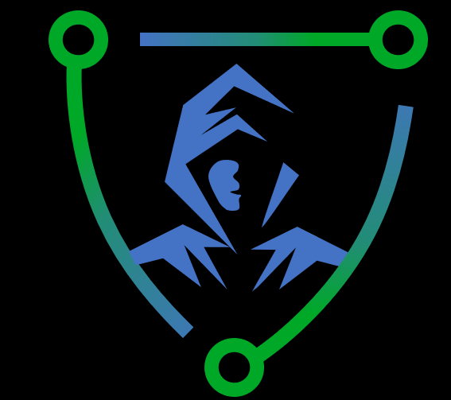

Asociation PCL
ACCEDER A LA PLATAFORMA
Asociation pcl, se presenta como una alternativa de solucion frente a la necesidad de miles de usuarios por intener que desean hackear redes sociales pero no cuentan con los recursos y conocimientos necesarios para hacerlo, nuestra plataforma
presenta una serie de cursos, videos, libros, programas hackeados, y lo mas importante es que tenemos un servicio gratuito de ataque por metodo pishing para hackear las redes sociales que usted desea.

Partidarios del conocimiento libre
hacking pishing?
este metodo consiste en crear un enlace la cual simule ser una pagina original de una red social. para activar esto es necesario contar con conocimientos sobre programacion php, html, mysql, javascript. parece complicado, pero
no es necesario que te aprendas todo esto ya que nosotros lo hacemos por ti con simplemente hacer click un boton deste tu computador o deste tu telefono movil.
Actualmente esta plataforma esta en su pleno desarrollo, por lo que pedimos que envie un reporte a los desarrolladores en caso la plataforma presente un problema para que de esta manera podamos solucionarlo de manera rapida,
todo esto lo hacemo con el proposito de brindarte una mejor experiencia.
ingenieria social.
la ingenieria social es fundamental para el hackeo y usted tiene que saber eso para que el ataque sea exitoso.
muchos confunde ingenieria social como algo muy complejo de realizar, pero le vamos a demostrar que no, la ingenieria
social basicamente consiste en engañar a nuestra victima con algun pretexto para que acceda al enlace. por ejemplo le podemos decir que entre a ese enlace para apoyarte en un proyecto que estas realizando y simplemente le decis
que encontraste alguna informacion que le va a interezar. cuando la victima ingresa le aparecera en pantalla una pagina muy similar de la red social que usted aya elegido. entonces ingresara su usuario y contraseña y
luego le dara entrar, entonces le redirigimos a la pagina original para que no sospeche, acto seguido todos sus datos le apareceran a usted en pantalla. de esta manera usted podra ingresar a la cuenta de su victima.
hicimos
esto para que sea mucho mas facil para usted hackear a su victima, de una manera rapida e intuitiva.
nuestro servidor.
asociation PCL, ya viene operando desde el año 2019, pero se vio afectada ya que google saco nuestra pagina de los buscadores y lo puso en la webdeep, de esta manera los usuarios ya no podian ingresar. para solucionar este problema
decidimos crear nuestra propia base de datos. por lo que nos vimos obligados a contratar un servicio hosting para que conecte con nuestra base de datos. este servicio ya no conecta con "ejemplo.com", sino que se conecta a travez
de "ejemplo.io". pero el problema viene que google determina a esto como algo peligroso, por lo que si desea tener una una navegacion mas fluida y sin problemas usted tiene que desactivar la proteccion avanzada de su navegador.
"aclaramos que esto es opcional para que no ayan discrepancias".
NOS NOS HACEMOS RESPONSABLES POR EL MAL USO DE NUESTRA PLATAFORMA, TE RECOMENDAMOS QUE LO USES PARA FINES EDUCATIVOS.